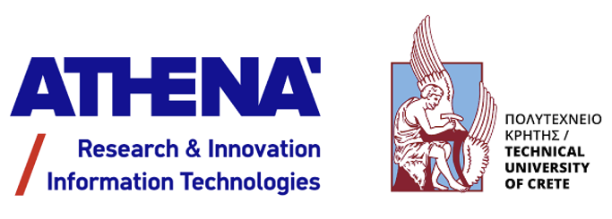

|
 
Minos Garofalakis / Μίνως ΓαροφαλάκηςDirector, Information Management Systems Institute (IMSI)ATHENA Research and Innovation Center Professor, School of Electrical & Computer Engineering Technical University of Crete Director, Software Technology and Network Applications Lab (SoftNet) ACM Fellow (2018); IEEE Fellow (2017) Member, Academia Europaea (2023) School of ECE, Technical University of Crete University Campus -- Kounoupidiana 73100 Chania, Hellas (Greece) Voice: +30-210-6875402, +30-28210-37211 FAX: +30-210-6856804, +30-28210-37542 
About meI am the Director of the Information Management Systems Institute (IMSI) at the ATHENA Research and Innovation Center in Athens, Greece, and a Professor of Computer Science at the School of ECE of the Technical University of Crete in Chania, Greece, where I direct the Software Technology and Network Applications Laboratory (SoftNet). Since June 2023, I also work as a (part-time) research consultant for Huawei's Edinburgh Research Centre. My work is in the broad area of "Big Data Analytics", including (centralized and distributed) data stream processing, probabilistic data management, data synopses and approximate query processing, and large-scale machine learning. More recently, I have also become interested in secure and private data analytics exploiting both cryptographic tools and other privacy definitions (e.g., differential privacy), and their combination with other technologies (e.g., blockchain ledgers) in order to build effective digital marketplaces for data exchange and data services (see the My Health, My Data and DataTools4Heart EU projects). This research has given birth to Agora Labs, a startup company I co-founded in 2022 to bring state-of-the-art data privacy technologies to the healthcare domain (and where I still serve as Co-founder and Director of Research).I am originally from the beautiful city of Chania on the island of Crete, Greece. (I guess that explains my first name.) I received my BSc (Valedictorian, School of Engineering) in 1992 from the University of Patras, Computer Engineering and Informatics Dept. (UOPCEID). I also spent the following year at UOPCEID as a post-graduate fellow. In the Fall of 1993, I joined the graduate program in Computer Sciences at the University of Wisconsin - Madison, where I received my MSc (1994) and PhD (1998). I have worked as a Member of Technical Staff at Bell Labs (1998-2005), as a Senior Research Scientist at Intel Research Berkeley (2005-2007), and as a Principal Research Scientist at Yahoo! Research (2007-2008). During 2006-2008, I also held an Adjunct Associate Professor position at the EECS Department of the University of California, Berkeley, where I was part of the UC-Berkeley Database Group. In September 2008, I moved to the Technical University of Crete. I served as the TUC ECE Department Chair for the period 9/2011-9/2013. Between 11/2012-3/2015, I was a Member of the Board of Directors of Information Society, S.A., a Greek government organization for advancing large-scale, national-level efforts in Information and Communication Technologies. Between 2/2022-2/2023, I also worked as a consulting Senior Principal Scientist for Amazon Web Services (AWS). I am an ACM Fellow (2018) "for contributions to data processing and analytics, particularly data streaming, approximation and uncertainty", an IEEE Fellow (2017) "for contributions to data streaming analytics", a Member of Academia Europaea (2023), and a recipient of the 2015 TUC Excellence in Research Award, the Bell Labs President's Gold Award (2004), the Bell Labs Teamwork Award (2003), and two Conference Best Research Paper Awards ( IEEE ICDE'2009, VLDB'2024 ). Google Scholar gives over 16,000 citations to my work, and an h-index value of 70. For more details, please see a brief third person bio, or a more detailed curriculum vitae (pdf). Some current/recent professional service: IEEE ICDE'2025 (Industry and Applications Co-Chair), ACM SIGMOD'2025 (Associate Editor), IEEE ICDE'2024 (Lightning Talks Chair), IEEE ICDM'2024 (Area Chair), 4th ACM Europe Summer School on Data Science (Co-Chair), IEEE DSAA'2023 (PC Chair, Applications Track), IEEE ICDM'2023 (Area Chair), 2023 IEEE CS Fellows Evaluation Committee Recent news: OmniSketch receives Best Research Paper Award at VLDB'2024, Keynote talk at IEEE BigData'2023, Research.com CS rankings for Greece, Keynote talk at ICPM'2022 Other points of web presence: Wikipedia (Greek only), LinkedIn, Facebook.
[ Publications ( Google Scholar, DBLP, ACM DL ) || Talks || Patents ][ Students/Postdocs || Bio || Vita (pdf) ] List of co-authors/co-inventors/co-editors: Karl Aberer, Ryan Aipperspach, Elias Alevizos, Alexander Artikis, Shivnath Babu, Rajagopal Baskaran, Ekaterini S. Bei, Yigal Bejerano, Michael Benedikt, Yuri Breitbart, Eric Brewer, Kurt P. Brown, Kaushik Chakrabarti, Chee-Yong Chan, Raphael Chand, Stavros Christodoulakis, Grigorios Chrysos, Tyson Condie, Graham Cormode, Nilesh Dalvi, Abhinandan Das, Antonios Deligiannakis, Ioannis Demertzis, Amol Deshpande, Anand Deshpande, Anton Dignos, Alin Dobra, Apostolos Dollas, Natasha Drukh, Rob Ennals, K. P. Exarchos, Wenfei Fan, Pascal Felber, Daniela Florescu, Ioannis Flouris, D. I. Fotiadis, Michael J. Franklin, Johann Gamper, Prashant Gandhi, Sumit Ganguly, Venkatesh Ganti, David E. Gay, Johannes Gehrke, Nikos Giatrakos, Phillip B. Gibbons, Aristides Gionis, Anupam Gupta, Peter J. Haas, Joseph M. Hellerstein, Ling Huang, Ryan J. Huebsch, Dongjoon Hyun, Yannis Ioannidis, Ekaterini Ioannou, Ben Jai, Shawn R. Jeffery, Christopher M. Jermaine, Xibei Jia, Michael I. Jordan, Anthony D. Joseph, Kalliopi D. Kalantzaki, Michael Kamp, Carl-Christian Kanne, Daniel Keren, Wolfgang Klas, Ralf Klinkenberg, Christoph Koch, Yannis Kotidis, Amit Kumar, Arnon Lazerson, Boon Thau Loo, Ashwin Machanavajjhala, David Maier, Petros Maniatis, Ioanna Manolescu, Cliff Martin, Vasiliki Manikaki, Yossi Matias, Renée J. Miller, Andrew McGregor, Marco Mesiti, Eirinaios Michelakis, George Mihaila, Michael Mock, S. Muthukrishnan, Erich J. Neuhold, XuanLong Nguyen, Apostolos Nydriotis, Banu Özden, George Paliouras, Stavros Papadopoulos, Evangelos E. Papalexakis, Charalampos Papamanthou, Odysseas Papapetrou, Nikos Pavlakis, Euripides Petrakis, Dionisios Pnevmatikatos, Neoklis Polyzotis, Srinivasan Rajagopal, Raghu Ramakrishnan, Sridhar Ramaswamy, Kannan Ramchandran, Frederick Reiss, Rajeev Rastogi, Vibhor Rastogi, Timothy Roscoe, Nick Roussopoulos, Krishan Sabnani, Dimitris Sacharidis, Jagadish Samantarai, Vasilis Samoladas, Ralf Schenkel, Assaf Schuster, S. Seshadri, Michael Shadle, Jayavel Shanmugasundaram, Izchak Sharfman, Michael Shekelyan, Kyuseok Shim, Nicholas D. Sidiropoulos, Avi Silberschatz, Ian Soboroff, Mark Sordo, Divesh Srivastava, Ion Stoica, Torsten Suel, Donald Swanson, Nina Taft, Liviu Tancau, Joseph Ting, Peter A. Tucker, Bhavani Thuraisingham, Vasilis Vassalos, Sergei Vassilvitskii, Erik Vee, Daisy Zhe Wang, Min Wang, Wei Wang, X. Sean Wang, Michael L. Wick, Eugene Wu, Ming Xiong, Ramana Yerneni, Ke Yi, Michalis Zervakis, Yuan Zhuge 
|
{kind=link}